segment¶
Module: segment.benchmarks¶
Module: segment.benchmarks.bench_quickbundles¶
MDFpy |
|
Metric |
|
QB_New |
|
QB_Old |
|
assert_array_equal |
|
assert_arrays_equal |
|
assert_equal |
|
bench_quickbundles |
|
get_data |
|
measure |
Module: segment.clustering¶
ABCMeta |
Metaclass for defining Abstract Base Classes (ABCs). |
AveragePointwiseEuclideanMetric |
Computes the average of pointwise Euclidean distances between two sequential data. |
Cluster([id, indices, refdata]) |
Provides functionalities for interacting with a cluster. |
ClusterCentroid(centroid[, id, indices, refdata]) |
Provides functionalities for interacting with a cluster. |
ClusterMap([refdata]) |
Provides functionalities for interacting with clustering outputs. |
ClusterMapCentroid([refdata]) |
Provides functionalities for interacting with clustering outputs that have centroids. |
Clustering |
Methods |
Identity |
Provides identity indexing functionality. |
Metric |
Computes a distance between two sequential data. |
QuickBundles(threshold[, metric, ...]) |
Clusters streamlines using QuickBundles [Garyfallidis12]. |
ResampleFeature |
Extracts features from a sequential datum. |
abstractmethod(funcobj) |
A decorator indicating abstract methods. |
Module: segment.mask¶
applymask |
|
binary_dilation |
|
bounding_box |
|
clean_cc_mask |
|
color_fa |
|
crop |
|
fractional_anisotropy |
|
generate_binary_structure |
|
median_filter |
|
median_otsu |
|
multi_median |
|
otsu |
|
segment_from_cfa |
|
warn |
Module: segment.metric¶
ArcLengthFeature |
Extracts features from a sequential datum. |
AveragePointwiseEuclideanMetric |
Computes the average of pointwise Euclidean distances between two sequential data. |
CenterOfMassFeature |
Extracts features from a sequential datum. |
CosineMetric |
Computes the cosine distance between two vectors. |
EuclideanMetric |
alias of SumPointwiseEuclideanMetric |
Feature |
Extracts features from a sequential datum. |
IdentityFeature |
Extracts features from a sequential datum. |
Metric |
Computes a distance between two sequential data. |
MidpointFeature |
Extracts features from a sequential datum. |
MinimumAverageDirectFlipMetric |
Computes the MDF distance (minimum average direct-flip) between two sequential data. |
ResampleFeature |
Extracts features from a sequential datum. |
SumPointwiseEuclideanMetric |
Computes the sum of pointwise Euclidean distances between two sequential data. |
VectorOfEndpointsFeature |
Extracts features from a sequential datum. |
dist |
Computes a distance between datum1 and datum2. |
distance_matrix |
Computes the distance matrix between two lists of sequential data. |
mdf(s1, s2) |
Computes the MDF (Minimum average Direct-Flip) distance [Garyfallidis12] between two streamlines. |
Module: segment.quickbundles¶
QuickBundles |
|
bundles_distances_mdf |
|
downsample |
|
local_skeleton_clustering |
|
warn |
Module: segment.threshold¶
otsu(image[, nbins]) |
Return threshold value based on Otsu’s method. |
MDFpy¶
Metric¶
QB_New¶
QB_Old¶
assert_array_equal¶
assert_arrays_equal¶
assert_equal¶
bench_quickbundles¶
get_data¶
measure¶
ABCMeta¶
-
class
dipy.segment.clustering.ABCMeta¶ Bases:
typeMetaclass for defining Abstract Base Classes (ABCs).
Use this metaclass to create an ABC. An ABC can be subclassed directly, and then acts as a mix-in class. You can also register unrelated concrete classes (even built-in classes) and unrelated ABCs as ‘virtual subclasses’ – these and their descendants will be considered subclasses of the registering ABC by the built-in issubclass() function, but the registering ABC won’t show up in their MRO (Method Resolution Order) nor will method implementations defined by the registering ABC be callable (not even via super()).
Methods
mro(() -> list)return a type’s method resolution order register(subclass)Register a virtual subclass of an ABC. -
__init__()¶ x.__init__(...) initializes x; see help(type(x)) for signature
-
register(subclass)¶ Register a virtual subclass of an ABC.
-
AveragePointwiseEuclideanMetric¶
-
class
dipy.segment.clustering.AveragePointwiseEuclideanMetric¶ Bases:
dipy.segment.metricspeed.SumPointwiseEuclideanMetricComputes the average of pointwise Euclidean distances between two sequential data.
A sequence of N-dimensional points is represented as a 2D array with shape (nb_points, nb_dimensions). A feature object can be specified in order to calculate the distance between the features, rather than directly between the sequential data.
Parameters: feature : Feature object, optional
It is used to extract features before computing the distance.
Notes
The distance between two 2D sequential data:
s1 s2 0* a *0 \ | \ | 1* | | b *1 | \ 2* \ c *2is equal to
 where 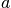 is the Euclidean distance between s1[0] and
s2[0], 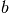 between s1[1] and s2[1] and
where 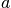 is the Euclidean distance between s1[0] and
s2[0], 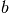 between s1[1] and s2[1] and  between s1[2] and s2[2].
between s1[2] and s2[2].Methods
are_compatibleChecks if features can be used by metric.dist based on their shape. distComputes a distance between two data points based on their features. -
__init__()¶ x.__init__(...) initializes x; see help(type(x)) for signature
-
Cluster¶
-
class
dipy.segment.clustering.Cluster(id=0, indices=None, refdata=<dipy.segment.clustering.Identity instance>)¶ Bases:
objectProvides functionalities for interacting with a cluster.
Useful container to retrieve index of elements grouped together. If a reference to the data is provided to cluster_map, elements will be returned instead of their index when possible.
Parameters: cluster_map : ClusterMap object
Reference to the set of clusters this cluster is being part of.
id : int
Id of this cluster in its associated cluster_map object.
refdata : list (optional)
Actual elements that clustered indices refer to.
Notes
A cluster does not contain actual data but instead knows how to retrieve them using its ClusterMap object.
Methods
assign(*indices)Assigns indices to this cluster. -
__init__(id=0, indices=None, refdata=<dipy.segment.clustering.Identity instance>)¶
-
assign(*indices)¶ Assigns indices to this cluster.
Parameters: *indices : list of indices
Indices to add to this cluster.
-
ClusterCentroid¶
-
class
dipy.segment.clustering.ClusterCentroid(centroid, id=0, indices=None, refdata=<dipy.segment.clustering.Identity instance>)¶ Bases:
dipy.segment.clustering.ClusterProvides functionalities for interacting with a cluster.
Useful container to retrieve the indices of elements grouped together and the cluster’s centroid. If a reference to the data is provided to cluster_map, elements will be returned instead of their index when possible.
Parameters: cluster_map : ClusterMapCentroid object
Reference to the set of clusters this cluster is being part of.
id : int
Id of this cluster in its associated cluster_map object.
refdata : list (optional)
Actual elements that clustered indices refer to.
Notes
A cluster does not contain actual data but instead knows how to retrieve them using its ClusterMapCentroid object.
Methods
assign(id_datum, features)Assigns a data point to this cluster. update()Update centroid of this cluster. -
__init__(centroid, id=0, indices=None, refdata=<dipy.segment.clustering.Identity instance>)¶
-
assign(id_datum, features)¶ Assigns a data point to this cluster.
Parameters: id_datum : int
Index of the data point to add to this cluster.
features : 2D array
Data point’s features to modify this cluster’s centroid.
-
update()¶ Update centroid of this cluster.
Returns: converged : bool
Tells if the centroid has moved.
-
ClusterMap¶
-
class
dipy.segment.clustering.ClusterMap(refdata=<dipy.segment.clustering.Identity instance>)¶ Bases:
objectProvides functionalities for interacting with clustering outputs.
Useful container to create, remove, retrieve and filter clusters. If refdata is given, elements will be returned instead of their index when using Cluster objects.
Parameters: refdata : list
Actual elements that clustered indices refer to.
Methods
add_cluster(*clusters)Adds one or multiple clusters to this cluster map. clear()Remove all clusters from this cluster map. clusters_sizes()Gets the size of every cluster contained in this cluster map. get_large_clusters(min_size)Gets clusters which contains at least min_size elements. get_small_clusters(max_size)Gets clusters which contains at most max_size elements. remove_cluster(*clusters)Remove one or multiple clusters from this cluster map. size()Gets number of clusters contained in this cluster map. -
__init__(refdata=<dipy.segment.clustering.Identity instance>)¶
-
add_cluster(*clusters)¶ Adds one or multiple clusters to this cluster map.
Parameters: *clusters : Cluster object, ...
Cluster(s) to be added in this cluster map.
-
clear()¶ Remove all clusters from this cluster map.
-
clusters¶
-
clusters_sizes()¶ Gets the size of every cluster contained in this cluster map.
Returns: list of int :
Sizes of every cluster in this cluster map.
-
get_large_clusters(min_size)¶ Gets clusters which contains at least min_size elements.
Parameters: min_size : int
Minimum number of elements a cluster needs to have to be selected.
Returns: list of `Cluster` objects :
Clusters having at least min_size elements.
-
get_small_clusters(max_size)¶ Gets clusters which contains at most max_size elements.
Parameters: max_size : int
Maximum number of elements a cluster can have to be selected.
Returns: list of `Cluster` objects :
Clusters having at most max_size elements.
-
refdata¶
-
remove_cluster(*clusters)¶ Remove one or multiple clusters from this cluster map.
Parameters: *clusters : Cluster object, ...
Cluster(s) to be removed from this cluster map.
-
size()¶ Gets number of clusters contained in this cluster map.
-
ClusterMapCentroid¶
-
class
dipy.segment.clustering.ClusterMapCentroid(refdata=<dipy.segment.clustering.Identity instance>)¶ Bases:
dipy.segment.clustering.ClusterMapProvides functionalities for interacting with clustering outputs that have centroids.
Allows to retrieve easely the centroid of every cluster. Also, it is a useful container to create, remove, retrieve and filter clusters. If refdata is given, elements will be returned instead of their index when using ClusterCentroid objects.
Parameters: refdata : list
Actual elements that clustered indices refer to.
Methods
add_cluster(*clusters)Adds one or multiple clusters to this cluster map. clear()Remove all clusters from this cluster map. clusters_sizes()Gets the size of every cluster contained in this cluster map. get_large_clusters(min_size)Gets clusters which contains at least min_size elements. get_small_clusters(max_size)Gets clusters which contains at most max_size elements. remove_cluster(*clusters)Remove one or multiple clusters from this cluster map. size()Gets number of clusters contained in this cluster map. -
__init__(refdata=<dipy.segment.clustering.Identity instance>)¶
-
centroids¶
-
Clustering¶
-
class
dipy.segment.clustering.Clustering¶ Bases:
objectMethods
cluster(data[, ordering])Clusters data. -
__init__()¶ x.__init__(...) initializes x; see help(type(x)) for signature
-
cluster(data, ordering=None)¶ Clusters data.
Subclasses will perform their clustering algorithm here.
Parameters: data : list of N-dimensional arrays
Each array represents a data point.
ordering : iterable of indices, optional
Specifies the order in which data points will be clustered.
Returns: `ClusterMap` object :
Result of the clustering.
-
Identity¶
-
class
dipy.segment.clustering.Identity¶ Provides identity indexing functionality.
This can replace any class supporting indexing used for referencing (e.g. list, tuple). Indexing an instance of this class will return the index provided instead of the element. It does not support slicing.
Metric¶
-
class
dipy.segment.clustering.Metric¶ Bases:
objectComputes a distance between two sequential data.
A sequence of N-dimensional points is represented as a 2D array with shape (nb_points, nb_dimensions). A feature object can be specified in order to calculate the distance between extracted features, rather than directly between the sequential data.
Parameters: feature : Feature object, optional
It is used to extract features before computing the distance.
Notes
When subclassing Metric, one only needs to override the dist and are_compatible methods.
Methods
are_compatibleChecks if features can be used by metric.dist based on their shape. distComputes a distance between two data points based on their features. -
__init__()¶ x.__init__(...) initializes x; see help(type(x)) for signature
-
are_compatible()¶ Checks if features can be used by metric.dist based on their shape.
Basically this method exists so we don’t have to do this check inside the metric.dist function (speedup).
Parameters: shape1 : int, 1-tuple or 2-tuple
shape of the first data point’s features
shape2 : int, 1-tuple or 2-tuple
shape of the second data point’s features
Returns: are_compatible : bool
whether or not shapes are compatible
-
dist()¶ Computes a distance between two data points based on their features.
Parameters: features1 : 2D array
Features of the first data point.
features2 : 2D array
Features of the second data point.
Returns: double :
Distance between two data points.
-
feature¶ Feature object used to extract features from sequential data
-
is_order_invariant¶ Is this metric invariant to the sequence’s ordering
-
QuickBundles¶
-
class
dipy.segment.clustering.QuickBundles(threshold, metric='MDF_12points', max_nb_clusters=2147483647)¶ Bases:
dipy.segment.clustering.ClusteringClusters streamlines using QuickBundles [Garyfallidis12].
Given a list of streamlines, the QuickBundles algorithm sequentially assigns each streamline to its closest bundle in 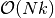 where 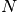 is the number of streamlines and 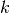 is the final number of bundles. If for a given streamline its closest bundle is farther than threshold, a new bundle is created and the streamline is assigned to it except if the number of bundles has already exceeded max_nb_clusters.
Parameters: threshold : float
The maximum distance from a bundle for a streamline to be still considered as part of it.
metric : str or Metric object (optional)
The distance metric to use when comparing two streamlines. By default, the Minimum average Direct-Flip (MDF) distance [Garyfallidis12] is used and streamlines are automatically resampled so they have 12 points.
max_nb_clusters : int
Limits the creation of bundles.
References
[Garyfallidis12] Garyfallidis E. et al., QuickBundles a method for tractography simplification, Frontiers in Neuroscience, vol 6, no 175, 2012. Examples
>>> from dipy.segment.clustering import QuickBundles >>> from dipy.data import get_data >>> from nibabel import trackvis as tv >>> streams, hdr = tv.read(get_data('fornix')) >>> streamlines = [i[0] for i in streams] >>> # Segment fornix with a treshold of 10mm and streamlines resampled to 12 points. >>> qb = QuickBundles(threshold=10.) >>> clusters = qb.cluster(streamlines) >>> len(clusters) 4 >>> list(map(len, clusters)) [61, 191, 47, 1] >>> # Resampling streamlines differently is done explicitly as follows. >>> # Note this has an impact on the speed and the accuracy (tradeoff). >>> from dipy.segment.metric import ResampleFeature >>> from dipy.segment.metric import AveragePointwiseEuclideanMetric >>> feature = ResampleFeature(nb_points=2) >>> metric = AveragePointwiseEuclideanMetric(feature) >>> qb = QuickBundles(threshold=10., metric=metric) >>> clusters = qb.cluster(streamlines) >>> len(clusters) 4 >>> list(map(len, clusters)) [58, 142, 72, 28]
Methods
cluster(streamlines[, ordering])Clusters streamlines into bundles. -
__init__(threshold, metric='MDF_12points', max_nb_clusters=2147483647)¶
-
cluster(streamlines, ordering=None)¶ Clusters streamlines into bundles.
Performs quickbundles algorithm using predefined metric and threshold.
Parameters: streamlines : list of 2D arrays
Each 2D array represents a sequence of 3D points (points, 3).
ordering : iterable of indices
Specifies the order in which data points will be clustered.
Returns: `ClusterMapCentroid` object :
Result of the clustering.
-
ResampleFeature¶
-
class
dipy.segment.clustering.ResampleFeature¶ Bases:
dipy.segment.featurespeed.CythonFeatureExtracts features from a sequential datum.
A sequence of N-dimensional points is represented as a 2D array with shape (nb_points, nb_dimensions).
The features being extracted are the points of the sequence once resampled. This is useful for metrics requiring a constant number of points for all
streamlines.Methods
extractExtracts features from a sequential datum. infer_shapeInfers the shape of features extracted from a sequential datum. -
__init__()¶ x.__init__(...) initializes x; see help(type(x)) for signature
-
abstractmethod¶
-
dipy.segment.clustering.abstractmethod(funcobj)¶ A decorator indicating abstract methods.
Requires that the metaclass is ABCMeta or derived from it. A class that has a metaclass derived from ABCMeta cannot be instantiated unless all of its abstract methods are overridden. The abstract methods can be called using any of the normal ‘super’ call mechanisms.
Usage:
- class C:
__metaclass__ = ABCMeta @abstractmethod def my_abstract_method(self, ...):
...
applymask¶
binary_dilation¶
bounding_box¶
clean_cc_mask¶
color_fa¶
crop¶
fractional_anisotropy¶
generate_binary_structure¶
median_filter¶
median_otsu¶
multi_median¶
otsu¶
segment_from_cfa¶
warn¶
ArcLengthFeature¶
-
class
dipy.segment.metric.ArcLengthFeature¶ Bases:
dipy.segment.featurespeed.CythonFeatureExtracts features from a sequential datum.
A sequence of N-dimensional points is represented as a 2D array with shape (nb_points, nb_dimensions).
The feature being extracted consists of one scalar representing the arc length of the sequence (i.e. the sum of the length of all segments).
Methods
extractExtracts features from a sequential datum. infer_shapeInfers the shape of features extracted from a sequential datum. -
__init__()¶ x.__init__(...) initializes x; see help(type(x)) for signature
-
AveragePointwiseEuclideanMetric¶
-
class
dipy.segment.metric.AveragePointwiseEuclideanMetric¶ Bases:
dipy.segment.metricspeed.SumPointwiseEuclideanMetricComputes the average of pointwise Euclidean distances between two sequential data.
A sequence of N-dimensional points is represented as a 2D array with shape (nb_points, nb_dimensions). A feature object can be specified in order to calculate the distance between the features, rather than directly between the sequential data.
Parameters: feature : Feature object, optional
It is used to extract features before computing the distance.
Notes
The distance between two 2D sequential data:
s1 s2 0* a *0 \ | \ | 1* | | b *1 | \ 2* \ c *2is equal to
where is the Euclidean distance between s1[0] and
s2[0], between s1[1] and s2[1] and between s1[2] and s2[2].Methods
are_compatibleChecks if features can be used by metric.dist based on their shape. distComputes a distance between two data points based on their features. -
__init__()¶ x.__init__(...) initializes x; see help(type(x)) for signature
-
CenterOfMassFeature¶
-
class
dipy.segment.metric.CenterOfMassFeature¶ Bases:
dipy.segment.featurespeed.CythonFeatureExtracts features from a sequential datum.
A sequence of N-dimensional points is represented as a 2D array with shape (nb_points, nb_dimensions).
The feature being extracted consists of one N-dimensional point representing the mean of the points, i.e. the center of mass.
Methods
extractExtracts features from a sequential datum. infer_shapeInfers the shape of features extracted from a sequential datum. -
__init__()¶ x.__init__(...) initializes x; see help(type(x)) for signature
-
CosineMetric¶
-
class
dipy.segment.metric.CosineMetric¶ Bases:
dipy.segment.metricspeed.CythonMetricComputes the cosine distance between two vectors.
A vector (i.e. a N-dimensional point) is represented as a 2D array with shape (1, nb_dimensions).
Notes
The distance between two vectors 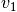 and 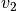 is equal to 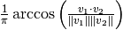 and is bounded within 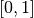.
Methods
are_compatibleChecks if features can be used by metric.dist based on their shape. distComputes a distance between two data points based on their features. -
__init__()¶ x.__init__(...) initializes x; see help(type(x)) for signature
-
EuclideanMetric¶
-
dipy.segment.metric.EuclideanMetric¶ alias of
SumPointwiseEuclideanMetric
Feature¶
-
class
dipy.segment.metric.Feature¶ Bases:
objectExtracts features from a sequential datum.
A sequence of N-dimensional points is represented as a 2D array with shape (nb_points, nb_dimensions).
Parameters: is_order_invariant : bool (optional)
tells if this feature is invariant to the sequence’s ordering. This means starting from either extremities produces the same features. (Default: True)
Notes
When subclassing Feature, one only needs to override the extract and infer_shape methods.
Methods
extractExtracts features from a sequential datum. infer_shapeInfers the shape of features extracted from a sequential datum. -
__init__()¶ x.__init__(...) initializes x; see help(type(x)) for signature
-
extract()¶ Extracts features from a sequential datum.
Parameters: datum : 2D array
Sequence of N-dimensional points.
Returns: 2D array :
Features extracted from datum.
-
infer_shape()¶ Infers the shape of features extracted from a sequential datum.
Parameters: datum : 2D array
Sequence of N-dimensional points.
Returns: int, 1-tuple or 2-tuple :
Shape of the features.
-
is_order_invariant¶ Is this feature invariant to the sequence’s ordering
-
IdentityFeature¶
-
class
dipy.segment.metric.IdentityFeature¶ Bases:
dipy.segment.featurespeed.CythonFeatureExtracts features from a sequential datum.
A sequence of N-dimensional points is represented as a 2D array with shape (nb_points, nb_dimensions).
The features being extracted are the actual sequence’s points. This is useful for metric that does not require any pre-processing.
Methods
extractExtracts features from a sequential datum. infer_shapeInfers the shape of features extracted from a sequential datum. -
__init__()¶ x.__init__(...) initializes x; see help(type(x)) for signature
-
Metric¶
-
class
dipy.segment.metric.Metric¶ Bases:
objectComputes a distance between two sequential data.
A sequence of N-dimensional points is represented as a 2D array with shape (nb_points, nb_dimensions). A feature object can be specified in order to calculate the distance between extracted features, rather than directly between the sequential data.
Parameters: feature : Feature object, optional
It is used to extract features before computing the distance.
Notes
When subclassing Metric, one only needs to override the dist and are_compatible methods.
Methods
are_compatibleChecks if features can be used by metric.dist based on their shape. distComputes a distance between two data points based on their features. -
__init__()¶ x.__init__(...) initializes x; see help(type(x)) for signature
-
are_compatible()¶ Checks if features can be used by metric.dist based on their shape.
Basically this method exists so we don’t have to do this check inside the metric.dist function (speedup).
Parameters: shape1 : int, 1-tuple or 2-tuple
shape of the first data point’s features
shape2 : int, 1-tuple or 2-tuple
shape of the second data point’s features
Returns: are_compatible : bool
whether or not shapes are compatible
-
dist()¶ Computes a distance between two data points based on their features.
Parameters: features1 : 2D array
Features of the first data point.
features2 : 2D array
Features of the second data point.
Returns: double :
Distance between two data points.
-
feature¶ Feature object used to extract features from sequential data
-
is_order_invariant¶ Is this metric invariant to the sequence’s ordering
-
MidpointFeature¶
-
class
dipy.segment.metric.MidpointFeature¶ Bases:
dipy.segment.featurespeed.CythonFeatureExtracts features from a sequential datum.
A sequence of N-dimensional points is represented as a 2D array with shape (nb_points, nb_dimensions).
The feature being extracted consists of one N-dimensional point representing the middle point of the sequence (i.e. `nb_points//2`th point).
Methods
extractExtracts features from a sequential datum. infer_shapeInfers the shape of features extracted from a sequential datum. -
__init__()¶ x.__init__(...) initializes x; see help(type(x)) for signature
-
MinimumAverageDirectFlipMetric¶
-
class
dipy.segment.metric.MinimumAverageDirectFlipMetric¶ Bases:
dipy.segment.metricspeed.AveragePointwiseEuclideanMetricComputes the MDF distance (minimum average direct-flip) between two sequential data.
A sequence of N-dimensional points is represented as a 2D array with shape (nb_points, nb_dimensions).
Notes
The distance between two 2D sequential data:
s1 s2 0* a *0 \ | \ | 1* | | b *1 | \ 2* \ c *2is equal to 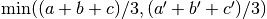 where is the Euclidean distance between s1[0] and s2[0], between s1[1] and s2[1],
between s1[2]
and s2[2], 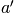 between s1[0] and s2[2], 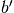 between s1[1] and s2[1]
and 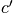 between s1[2] and s2[0].Methods
are_compatibleChecks if features can be used by metric.dist based on their shape. distComputes a distance between two data points based on their features. -
__init__()¶ x.__init__(...) initializes x; see help(type(x)) for signature
-
is_order_invariant¶ Is this metric invariant to the sequence’s ordering
-
ResampleFeature¶
-
class
dipy.segment.metric.ResampleFeature¶ Bases:
dipy.segment.featurespeed.CythonFeatureExtracts features from a sequential datum.
A sequence of N-dimensional points is represented as a 2D array with shape (nb_points, nb_dimensions).
The features being extracted are the points of the sequence once resampled. This is useful for metrics requiring a constant number of points for all
streamlines.Methods
extractExtracts features from a sequential datum. infer_shapeInfers the shape of features extracted from a sequential datum. -
__init__()¶ x.__init__(...) initializes x; see help(type(x)) for signature
-
SumPointwiseEuclideanMetric¶
-
class
dipy.segment.metric.SumPointwiseEuclideanMetric¶ Bases:
dipy.segment.metricspeed.CythonMetricComputes the sum of pointwise Euclidean distances between two sequential data.
A sequence of N-dimensional points is represented as a 2D array with shape (nb_points, nb_dimensions). A feature object can be specified in order to calculate the distance between the features, rather than directly between the sequential data.
Parameters: feature : Feature object, optional
It is used to extract features before computing the distance.
Notes
The distance between two 2D sequential data:
s1 s2 0* a *0 \ | \ | 1* | | b *1 | \ 2* \ c *2is equal to 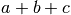 where is the Euclidean distance between s1[0] and s2[0], between s1[1] and s2[1] and
between s1[2] and s2[2].Methods
are_compatibleChecks if features can be used by metric.dist based on their shape. distComputes a distance between two data points based on their features. -
__init__()¶ x.__init__(...) initializes x; see help(type(x)) for signature
-
VectorOfEndpointsFeature¶
-
class
dipy.segment.metric.VectorOfEndpointsFeature¶ Bases:
dipy.segment.featurespeed.CythonFeatureExtracts features from a sequential datum.
A sequence of N-dimensional points is represented as a 2D array with shape (nb_points, nb_dimensions).
The feature being extracted consists of one vector in the N-dimensional space pointing from one end-point of the sequence to the other (i.e. S[-1]-S[0]).
Methods
extractExtracts features from a sequential datum. infer_shapeInfers the shape of features extracted from a sequential datum. -
__init__()¶ x.__init__(...) initializes x; see help(type(x)) for signature
-
dist¶
-
dipy.segment.metric.dist()¶ Computes a distance between datum1 and datum2.
A sequence of N-dimensional points is represented as a 2D array with shape (nb_points, nb_dimensions).
Parameters: metric : Metric object
Tells how to compute the distance between datum1 and datum2.
datum1 : 2D array
Sequence of N-dimensional points.
datum2 : 2D array
Sequence of N-dimensional points.
Returns: double :
Distance between two data points.
distance_matrix¶
-
dipy.segment.metric.distance_matrix()¶ Computes the distance matrix between two lists of sequential data.
The distance matrix is obtained by computing the pairwise distance of all tuples spawn by the Cartesian product of data1 with data2. If data2 is not provided, the Cartesian product of data1 with itself is used instead. A sequence of N-dimensional points is represented as a 2D array with shape (nb_points, nb_dimensions).
Parameters: metric : Metric object
Tells how to compute the distance between two sequential data.
data1 : list of 2D arrays
List of sequences of N-dimensional points.
data2 : list of 2D arrays
Llist of sequences of N-dimensional points.
Returns: 2D array (double) :
Distance matrix.
mdf¶
-
dipy.segment.metric.mdf(s1, s2)¶ Computes the MDF (Minimum average Direct-Flip) distance [Garyfallidis12] between two streamlines.
Streamlines must have the same number of points.
Parameters: s1 : 2D array
A streamline (sequence of N-dimensional points).
s2 : 2D array
A streamline (sequence of N-dimensional points).
Returns: double :
Distance between two streamlines.
References
[Garyfallidis12] Garyfallidis E. et al., QuickBundles a method for tractography simplification, Frontiers in Neuroscience, vol 6, no 175, 2012.
QuickBundles¶
bundles_distances_mdf¶
downsample¶
local_skeleton_clustering¶
warn¶
otsu¶
-
dipy.segment.threshold.otsu(image, nbins=256)¶ Return threshold value based on Otsu’s method. Copied from scikit-image to remove dependency.
Parameters: image : array
Input image.
nbins : int
Number of bins used to calculate histogram. This value is ignored for integer arrays.
Returns: threshold : float
Threshold value.